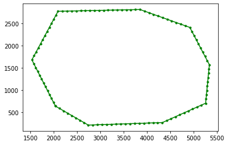

Simple triangular mesh in a given geometry
Simple triangular mesh in a given geometry#
This tutorial will show to generate 2d meshes withing a given geometry.
At the very beginning, the necessary libraries have to be imported.
from pathlib import Path
import matplotlib.pyplot as plt
import numpy as np
from meshkernel import GeometryList, Mesh2dFactory, MeshKernel
First, we use numpy to load data from Deltares’ custom polygon file “test.pol”. Please note we ignore the first few rows in the file to skip some Deltares specific data.
polygon_file_path = Path().absolute() / "data_examples" / "test.pol"
polygon_np = np.loadtxt(polygon_file_path, comments="*", skiprows=8, dtype=np.double)
Now, we will extract the data loaded from the file and save it as required by MeshKernel in a GeometryList.
x_coordinates = np.array(polygon_np[:, 0], dtype=np.double)
y_coordinates = np.array(polygon_np[:, 1], dtype=np.double)
polygon = GeometryList(x_coordinates, y_coordinates)
This is how the imported polygon looks like:
fig, ax = plt.subplots()
ax.plot(x_coordinates, y_coordinates, ".-", color="green");

Then, we create a MeshKernel instance.
mk = MeshKernel()
We can now execute the MeshKernel function mesh2d_make_mesh_from_polygon to generate a triangular mesh based on the given polygon.
mk.mesh2d_make_mesh_from_polygon(polygon)
Then, we retrieve the state from the MeshKernel instance.
mesh2d_output_0 = mk.mesh2d_get()
We can now plot the generated mesh.
fig, ax = plt.subplots()
mesh2d_output_0.plot_edges(ax, color="black")